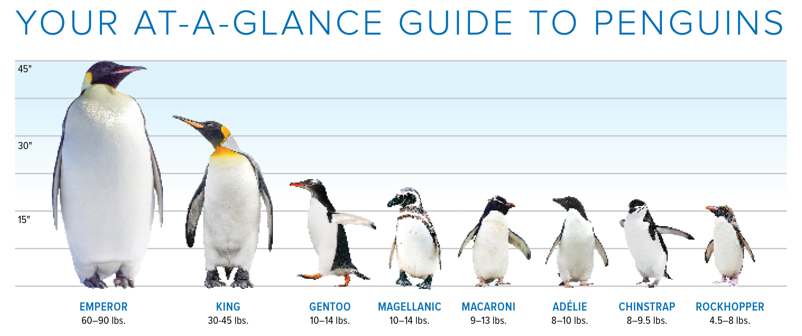

- Common name: Penguins
- Scientific name: Spheniscidae
- Group name: Colony
- Average life span: 15-20 years
- Size: 16-45 inches
- Weight: 2-88 pounds
- Diet: Carnivore
Main information
Penguins are flightless seabirds that live almost exclusively below the equator. Some island-dwellers can be found in warmer climates, but most—including emperor, adélie, chinstrap, and gentoo penguins—reside in and around icy Antarctica. A thick layer of blubber and tightly-packed, oily feathers are ideal for colder temperatures.
The 18 different species of penguins can widely in shape and size but all have black bodies and white bellies. This protective countershading allows them to hide from predators like leopard seals and orcas while they swim.
While penguins can’t fly, their stiff flippers, webbed feet, and sleek shape make them expert swimmers. In fact, they spend most of their lives in the ocean and do nearly all of their hunting for krill, squid, and crabs underwater. They can swim about 15 miles an hour, and when they want to go faster, they often porpoise, or leap out of the water as they swim.
Life on land
On land, penguins have an upright stance and tend to waddle, hop, or run with their bodies angled forward. Polar penguins can travel long distances quickly by “tobogganing,” or sliding across the ice on their bellies and pushing forward with their feet. If it’s especially cold, they huddle together in large colonies that protect them from predators and provide warmth. These colonies consist of thousands, and even millions, of penguins.
Breeding
Penguins come ashore to lay their eggs and raise their chicks. Most penguins stay with their mate for many years and lay only one or two eggs at a time. Parents take turns keeping their eggs warm, and when they hatch, feeding and protecting the chicks. For a few weeks each year, thousands of baby birds wait together while their parents forage for food. When mother and father return, chicks listen for the unique audio frequency of their parents’ call, allowing them to reunite in a large, noisy crowd.
Soon after the chicks fledge, parents will begin molting. Unlike some birds that shed a few feathers at a time, penguins lose all their feathers at once during a process called catastrophic molt. They condense this process to just a few weeks because they must fast during this time—they can’t hunt without their waterproof feathers.